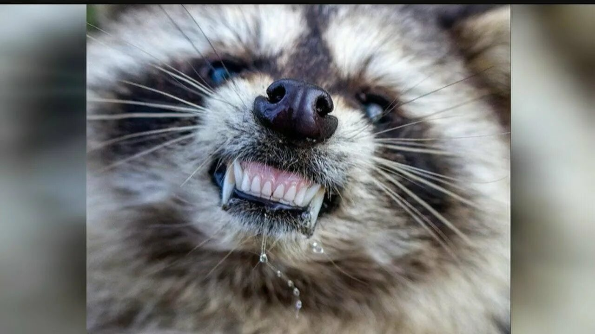
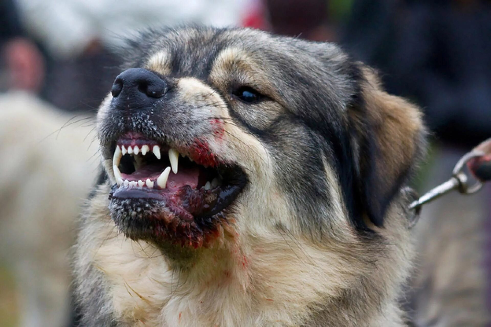

Бешенство
Гид по заболеванию: что это, кто переносит и что делать после укуса
📌 Что такое бешенство?
Бешенство — это смертельное вирусное заболевание, поражающее центральную нервную систему. Передаётся через слюну заражённого животного, чаще всего при укусе или ослюнении повреждённой кожи.
После появления симптомов болезнь практически неизлечима. Единственный способ выжить — вовремя начать вакцинацию после контакта.
🦠 Способы передачи
- Укус заражённого животного (основной путь).
- Ослюнение — попадание слюны больного животного на слизистые оболочки (глаза, рот, нос) или на повреждённую кожу (царапины, ссадины).
- Царапины от когтей, загрязнённых слюной (реже).
- Воздушно-капельным или контактно-бытовым путём не передаётся.
🐾 Основные переносчики
Бешенство могут переносить любые теплокровные животные, но чаще всего источником заражения становятся:

Лиса 🦊
При бешенстве: слюнотечение, потеря страха, агрессия
При бешенстве: слюнотечение, потеря страха, агрессия

Енот 🦝
Дезориентация, шаткая походка, агрессия
Дезориентация, шаткая походка, агрессия

Бродячая собака 🐕
Обильное слюнотечение, агрессия или апатия
Обильное слюнотечение, агрессия или апатия

Кошка 🐈
Необычное поведение, агрессия, слюнотечение
Необычное поведение, агрессия, слюнотечение

Летучая мышь 🦇
Дневная активность, падение на землю
Дневная активность, падение на землю

Барсук 🦡
Потеря страха, агрессия, слюнотечение
Потеря страха, агрессия, слюнотечение
Как выглядят при бешенстве: необычное поведение (дикое животное выходит к людям, теряет страх), обильное слюноотделение, шаткая походка, агрессия без причины или, наоборот, неестественная апатия, паралич конечностей.
⚠️ Что делать сразу после укуса или ослюнения
1 Немедленно промойте рану большим количеством воды с хозяйственным мылом. Мыло разрушает оболочку вируса. Промывайте не менее 10–15 минут под проточной водой.
2 Обработайте края раны антисептиком (йод, зелёнка, перекись водорода). ❌ Не прижигайте рану! Прижигание не убивает вирус, но усугубляет травму.
3 Не пытайтесь поймать животное самостоятельно — запишите его приметы и местонахождение для служб отлова.
4 После обработки — обязательно обратитесь в травмпункт или ближайшее медицинское учреждение. Врач оценит необходимость вакцинации. Даже если рана кажется незначительной — вирус может проникнуть через микроповреждения.
5 Курс вакцинации современными препаратами — это несколько уколов (обычно 6) по схеме, назначенной врачом. Это единственный способ предотвратить бешенство после контакта.